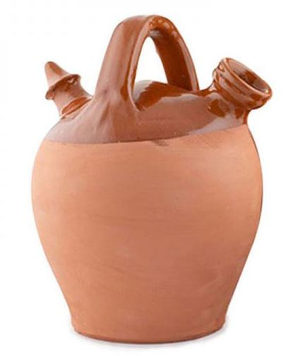

En el taller del pueblo, la alfarera daba forma al barro con paciencia. Después de cocerlo, preparaba cada botijo para conservar fresca el agua durante los días calurosos. Las piezas se dejaban secar junto a la ventana, donde la luz resaltaba el color rojizo de la arcilla.